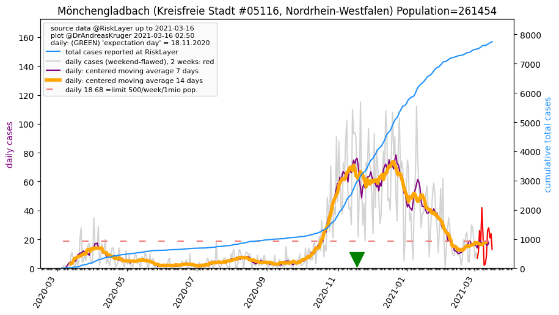
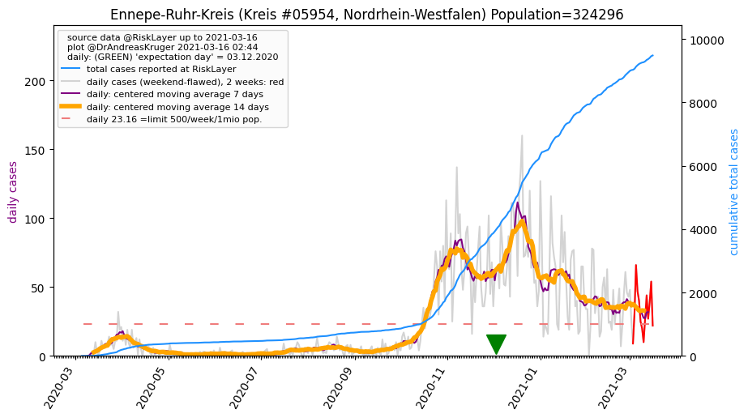
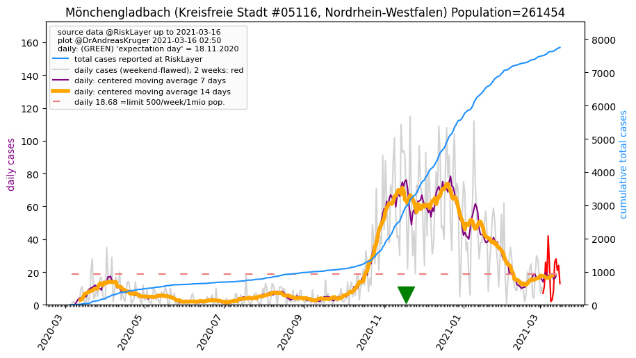
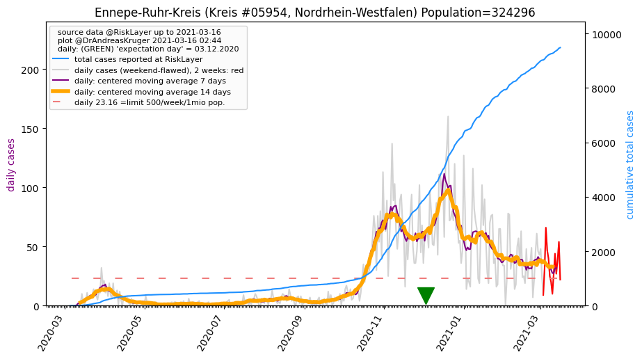

")
")
")
")
")
")
")
")
")
")
")
")
")
")
")

")
")
")

")
")
| Duisburg_KS (0.0 km) |
Mülheim an der Ruhr_KS (10.4 km) |
Oberhausen_KS (11.3 km) |
Krefeld_KS (15.1 km) |
Bottrop_KS (19.5 km) |
| Essen_KS (19.7 km) |
Wesel_KR (22.4 km) |
Düsseldorf_KS (23.3 km) |
Mettmann_KR (26.1 km) |
Gelsenkirchen_KS (26.6 km) |
| Viersen_KR (33.4 km) |
Rhein-Kreis Neuss_KR (33.5 km) |
Bochum_KS (34.2 km) |
Herne_KS (34.7 km) |
Wuppertal_KS (36.8 km) |
| Mönchengladbach_KS (37.8 km)  |
Solingen_KS (38.5 km) |
Recklinghausen_KR (39.2 km) |
Kleve_KR (40.6 km) |
Ennepe-Ruhr-Kreis_KR (42.3 km)  |
| Remscheid_KS (44.5 km) |
Leverkusen_KS (47.3 km) |
All plots are regenerated with new data every night. Beware this temporary hotspot is an experimental page - it might get removed, so please do not link to it. Instead link to project http://tiny.cc/cov19de.